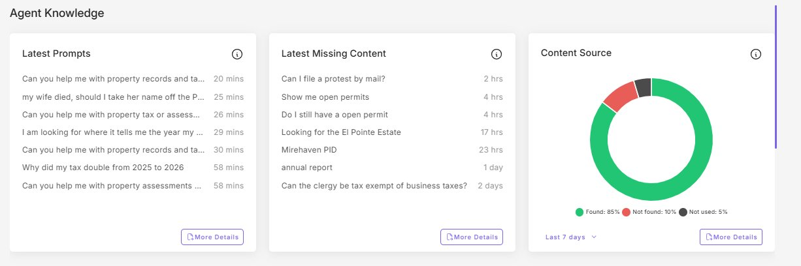
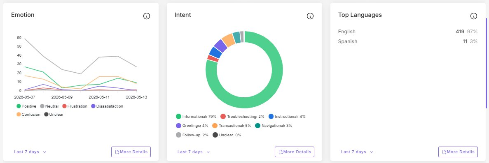
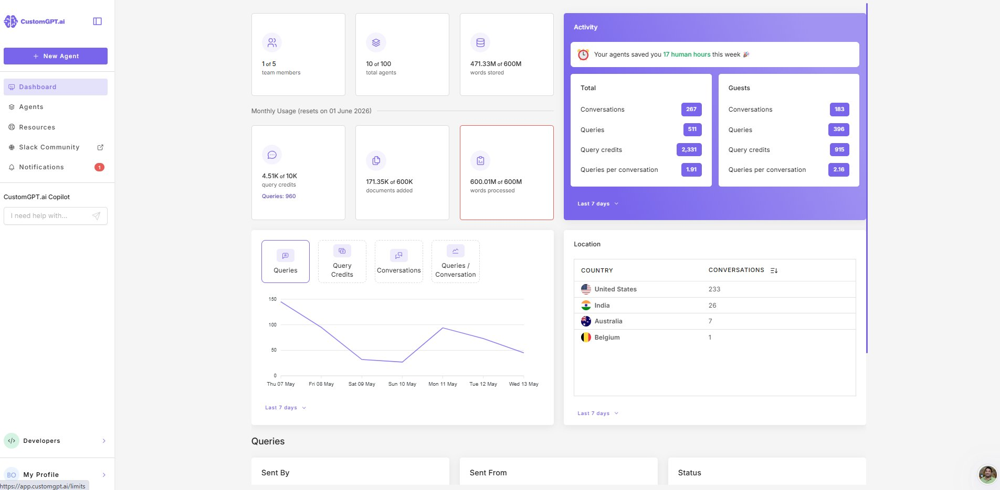

Bernalillo County Assessor · AI Operations · Standard Operating Procedure
Monthly Chatbot Metrics Report
Purpose
Monthly compilation of A.C.E. metrics for executive reporting and governance documentation.
Overview
Time required
Approximately 30 minutes.
Frequency
First business day of each month.
Reports on
The prior calendar month.
Key output
Tracker row, threshold flags, email summary to Assessor & Deputy.
Procedure
1Collect Overview Metrics
In CustomGPT.ai, open the A.C.E. agent. Click Analyze → Overview. Record:
- Total queries (last 30 days).
- Total conversations.
- Queries per conversation.
- Found and Not found rates (%).

2Collect Customer Intelligence Metrics
Click the Customer Intelligence tab. Record:
- Persona Failure % (Risk Monitoring).
- Spanish % and Spanish count (Top Languages).
- Top intent category and its %.
- Any non-English language with > 1% share.

3Collect Dashboard Metrics
Click back to Dashboard. Record:
- Query credits used this billing cycle.
- Words processed (note if at plan cap).
- Documents added and documents read (note ratio).
- Top three countries by conversation count.

4Update the Metrics Tracker
Add a new row dated for the reporting month. Compare against prior month, not prior day. Mark any threshold crossings.
5Email Summary
One paragraph to Assessor and Deputy: totals, within/outside expected ranges, any month-over-month threshold breaches with proposed action, link to tracker.
Flag Thresholds
These apply to the monthly figure only
Daily and weekly snapshots may cross these because of small-sample volatility — that is expected and not a flag.
| Metric | Flag when | What it usually means |
|---|---|---|
| Not found | > 15% | KB coverage gap. |
| Persona Failure | > 15% | Persona may be drifting. |
| Spanish | < 3% | Bilingual service underutilized. Trend over 2+ months is the signal. |
| Success rate | < 97% | Platform or integration concern. |
| Words Processed | At plan cap | Consider plan adjustment if persistent. |
| Single non-US country | > 15% of conversations | Possible bot traffic or unexpected exposure. |
Count on us.
Bernalillo County Assessor · Damian R. Lara, County Assessor
Bernalillo County Assessor · AI Operations
Monthly Chatbot Metrics Report
SOPA04
Purpose. ~30 min on the first business day of each month. Compile A.C.E. metrics from three sources, update the tracker, email summary to Assessor & Deputy. Compare month-over-month, not day-over-day.
The five steps
1Overview Analyze → Overview: queries, conversations, Found / Not found
2Customer Intel Persona Failure, Spanish, top intent
3Dashboard Credits, words, docs, top 3 countries
4Tracker New row, compare prior MONTH
5Email One paragraph to Assessor & Deputy
Overview metrics
- Total queries (30 days)
- Total conversations
- Queries per conversation
- Found % / Not found %
Customer Intelligence
- Persona Failure %
- Spanish % and count
- Top intent category & %
- Any non-EN language > 1%
Dashboard
- Query credits this cycle
- Words processed (cap?)
- Docs added vs. read
- Top 3 countries
Flag thresholds — monthly figure only
- Not found
- > 15% — KB coverage gap
- Persona Failure
- > 15% — persona may be drifting
- Spanish
- < 3% — bilingual service underutilized (2+ month trend)
- Success rate
- < 97% — platform or integration concern
- Words Processed
- At plan cap — consider plan adjustment if persistent
- Single non-US country
- > 15% — possible bot traffic or unexpected exposure
Daily and weekly snapshots may cross thresholds because of small-sample volatility. That's expected and NOT a flag. Only the monthly figure triggers the flags above.